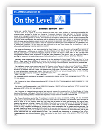

Archives
St. James has a rich history in Masonry and the community. Gathering it all will be time consuming. Consequently the archives section of our site will have to be a work in progress so check back often. In the mean time fell free to look over the St. James History page for a brief history of our lodge.
To help keep our Brethren up to date with the goings on at St. James, both past and present going forward, we have added the following three sub-pages, Notices, On The Level and our Bulletins from Grand Lodge. Now there is no excuse knowing what you may have missed.
Notices
In this section of the site we will be keeping a running posting of our notices. Lodge Notices are received monthly by the membership and include information about up and coming business meetings, Degree Nights and special events.
On The Level
A monthly publication written by one of our more learned Brethren Right Worshipful Brother Allan Large.
Bulletins
Grand Lodge Bulletins are received by St. James Secretary Rt. Wor. Bro. Raymond Little and distributed to the brethren. They include such matters as any Grand Lodge communications, Addresses to the Members by our Grand Master for the current year and interesting articles on Masonry and the like.